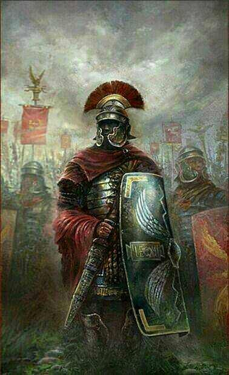

The history of Rome from the founding of the City

Roman women and their roles in ancient society


Roman emperors, their style of rule and their more intimate side
Vesuvius and its consequences for Pompeii and Herculaneum


Spartacus: his life as a slave, gladiator, and rebel


The Vestal Virgins: the order, their rituals, and politics